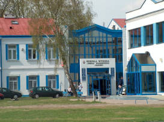
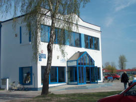
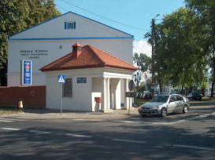
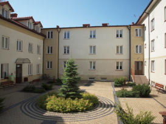
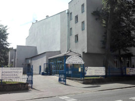

O nas
Mam zaszczyt zaprosić Państwa do zapoznania się ze Szkołą Wyższą im. Pawła Włodkowica w Płocku. Jest ona jedną z najstarszych i największych niepaństwowych uczelni w kraju. Kształcimy na ośmiu atrakcyjnych kierunkach studiów z dużą liczbą atrakcyjnych specjalności. Cztery z naszych kierunków uprawnione są do nadawania tytułu magistra. Posiadamy Filie w Iławie i Wyszkowie. W procesie kształcenia wykorzystujemy nowoczesne metody nauczania, m.in. e-learning. Najlepszą rekomendacją Uczelni są losy naszych absolwentów. Dzięki zdobytej wiedzy i naszemu dyplomowi podjęli oni ciekawą pracę lub zajęli bardziej odpowiedzialne stanowiska w dotychczasowych miejscach zatrudnienia.
Wyrażam nadzieję, że Państwa zainteresowanie Szkołą Wyższą im. Pawła Włodkowica w Płocku przyczyni się do bliższego poznania naszych celów, treści i zasad nauczania, a także pozyskania Państwa życzliwości.
Z poważaniem
prof. dr hab. inż. Zbigniew Paweł Kruszewski
Rektor Uczelni
Płock
- 
- 
- 
- 
Iława
- 